Install the plugin
Open Obspec on Figma Community and press Open in Figma. From then on it lives under Plugins in any file, or press ⌘ / and type Obspec.
Open it once. The first screen is the onboarding below: two steps, and you only ever do them once on each computer.
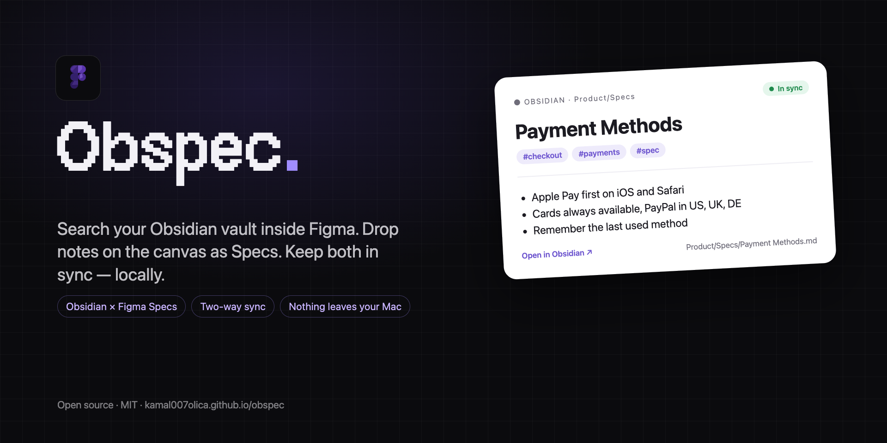
One time setup The bridge
Figma plugins can't read your disk, so a tiny helper on your computer does it: the Obspec Bridge. It indexes your vault and answers the plugin on localhost:27123. Nothing leaves your machine.
Open Terminal, paste this, press return:
npx github:Kamal007OLica/obspecIt installs the bridge as a background service that starts when you log in and starts it right away. When it prints Done, close the window. You never run this again. The plugin notices on its own and ticks step 1.
- Have the Obspec folder? Double-click Obspec Bridge.command instead. Same result.
- Upgrading later? Run the same command again. It replaces the service and restarts it.
- Want it gone? Add uninstall to the end of the command.
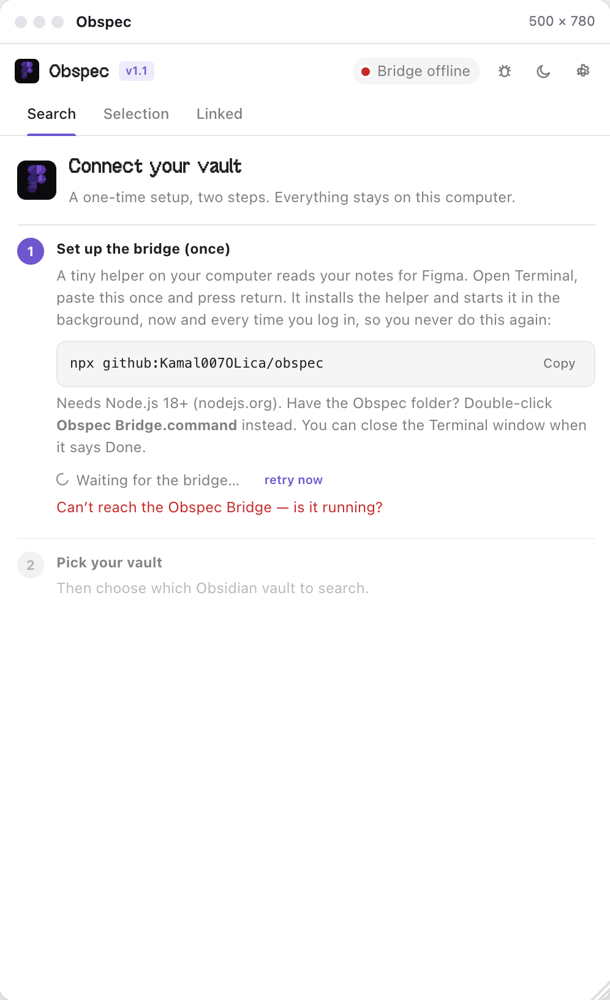
Pick your vault
The bridge reads Obsidian's own vault list, so step 2 shows your vaults by name. The one Obsidian has open right now is marked. Click it.
- Browse for a folder… opens the normal system dialog if the vault isn't listed.
- Or paste a folder path into the field and press Use.
The choice is remembered in ~/.obspec/config.json. Change it any time under ⚙ Settings → Vault. A 6,000-note vault indexes in well under a second, and the bridge watches the folder from then on.
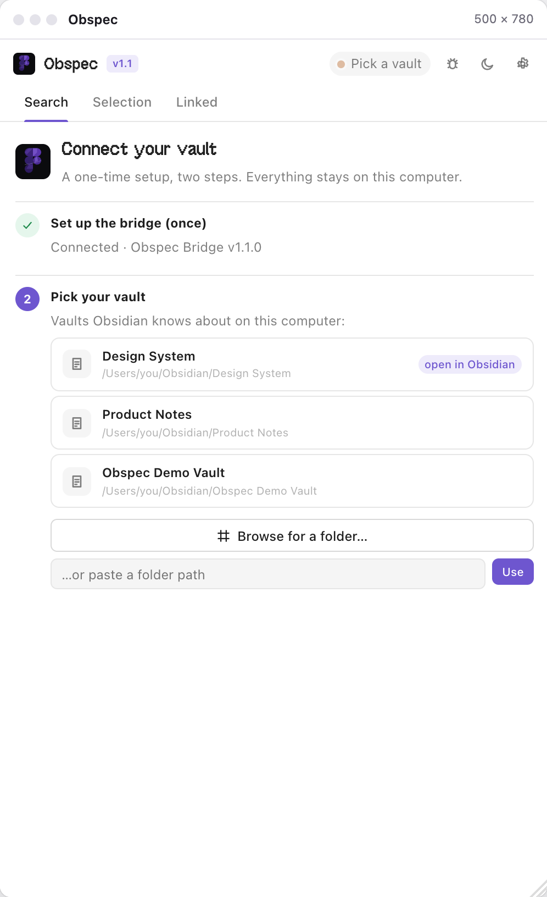
Search your vault
Type in the Search tab. Results come back in about ten milliseconds, ranked, with the matching words highlighted in a snippet. Title, path, tags and body all count.
- tag:spec only notes with that tag · path:Product/ only that folder
- "exact phrase" in quotes · -word to exclude
- ↑ ↓ move, ↵ opens, esc clears
The view switch gives you a plain list, cards with thumbnails for notes that embed images, or a compact one-liner. in Obsidian next to the results runs the same search inside Obsidian, so the matching notes light up in your vault too.
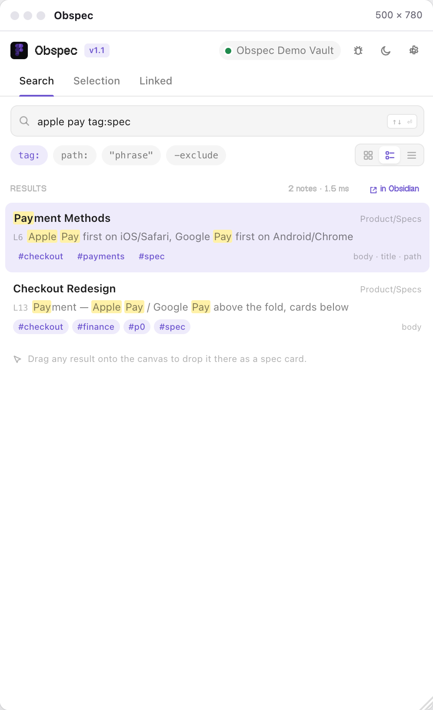
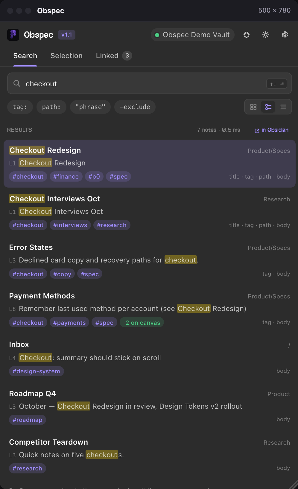
Open a note
Tap a result and the note renders right there: headings, lists, checkboxes, code, embedded images. Wikilinks are clickable, and the backlinks sit underneath, so you can walk your vault without leaving Figma.
The action bar at the bottom is the whole plugin in four buttons:
- Insert spec card puts the note on the canvas as a frame. Step 6.
- Link selection attaches the note to the layer you have selected. Step 7.
- ↓ saves the note as an .md ready for Figma Specs. Step 10.
- ↗ opens it in Obsidian.
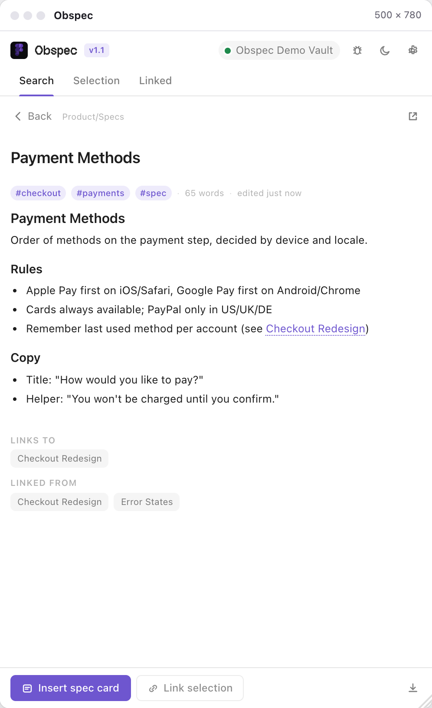
Drop a note on the canvas
Press Insert spec card, or simply drag a search result out of the plugin and let go over the canvas. The note lands where you dropped it as a clean auto-layout frame: eyebrow with the vault path, title, tags, body, and an Open in Obsidian footer.
It is a real Figma frame. Move it next to the screens it describes, resize it, comment on it. The small chip in its corner is the sync status, and it updates live.
Every card you insert shows up in the Linked tab. Click a row to select the frame on the canvas.
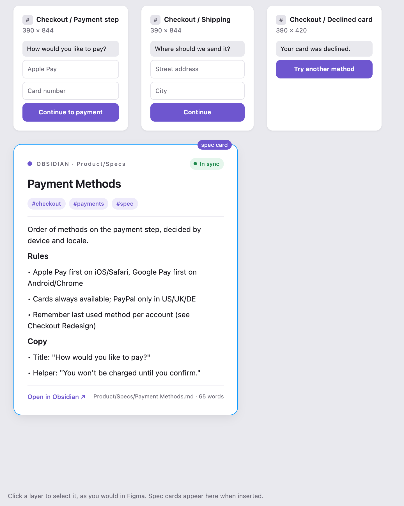
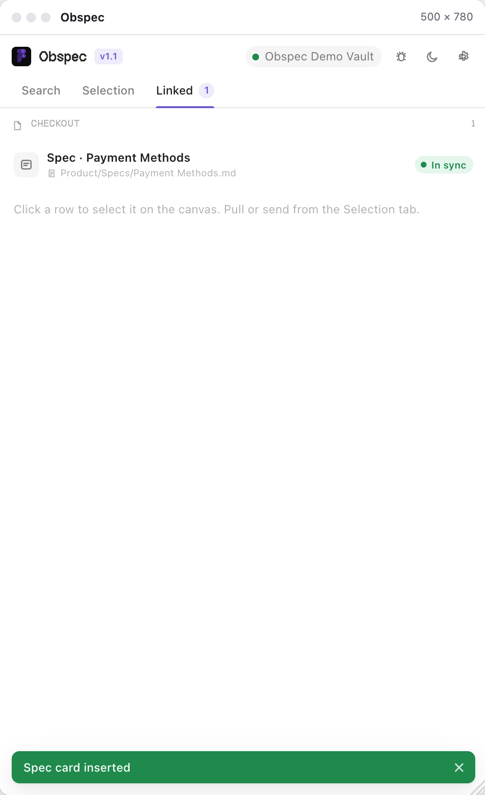
Link a layer you already have
Cards aren't the only way. Select any frame or component on the canvas and open the Selection tab. It shows the layer and two choices: Link to a note… and Send to Obsidian.
Link to a note… opens the search. Pick the note and the layer is tied to it: the Selection tab now shows the note, the status, and a Pull button. Nothing is drawn on your design; the link is stored on the layer as plugin data.
Linking is how the plugin knows what a design change means, because from now on it compares the layer's fingerprint and the note's hash every time you select it.
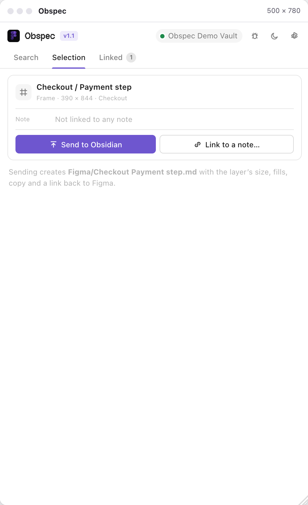
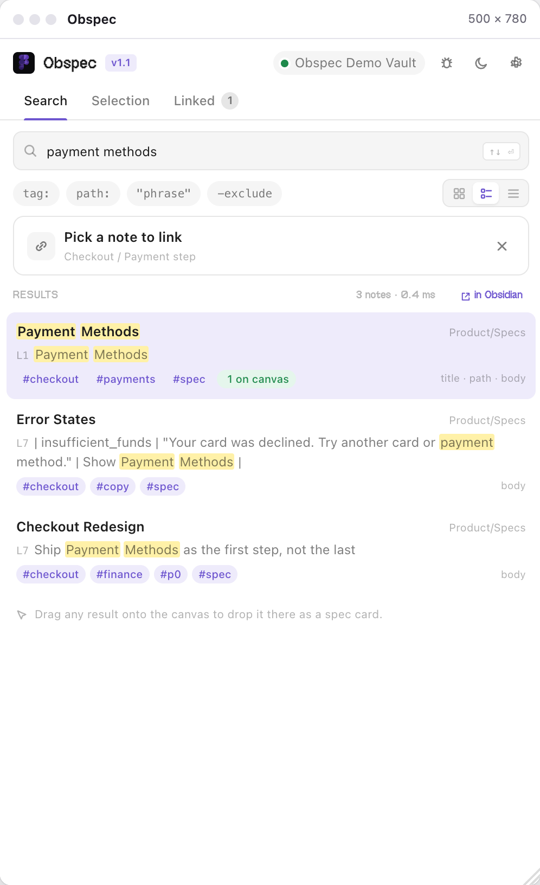
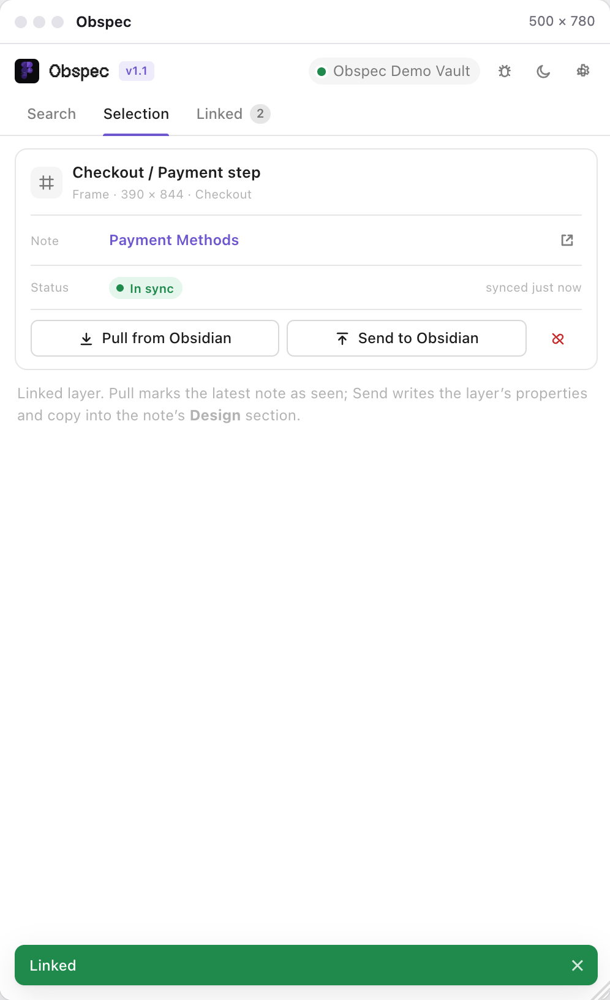
Edit in Obsidian Pull in Figma
Change the note in Obsidian and save. The bridge watches the file, so within a second the status flips to Note changed, in the Selection tab, in the Linked tab, and on the chip of the card itself.
Press Pull from Obsidian. A spec card is rebuilt from the new text; a linked layer just marks the note as read. Status goes back to In sync.
Nothing is pulled behind your back. You see the change, you decide when it lands.
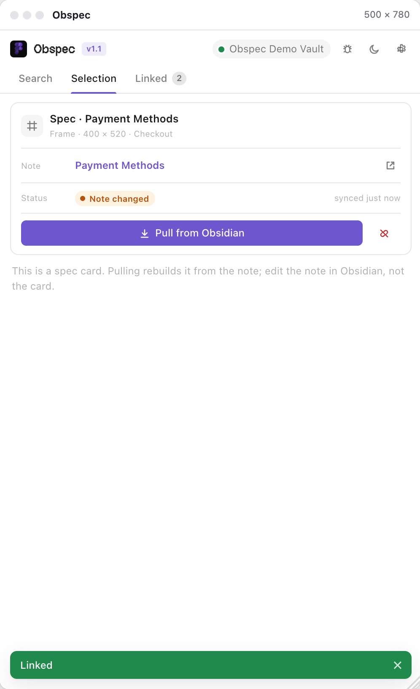
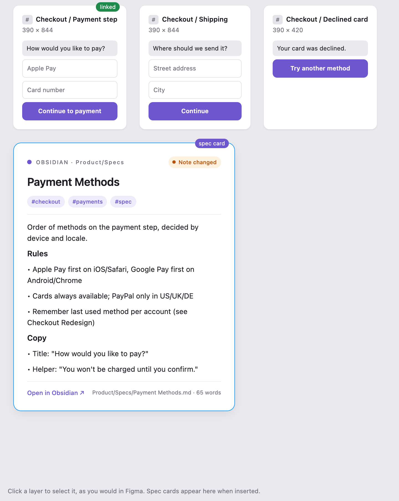
Change the design Send it back
The other direction. Select a component or frame and press Send to Obsidian. Obspec writes a ## Design section into the linked note: node name, size, fill, label, and a deep link straight to the layer in Figma.
No note yet? It creates one, with frontmatter and the same Design section, and links the layer to it.
Later, rename the button, change its fill, resize it. Select it and the status reads Design changed. Send again and the Design section is replaced; the rest of the note is untouched.
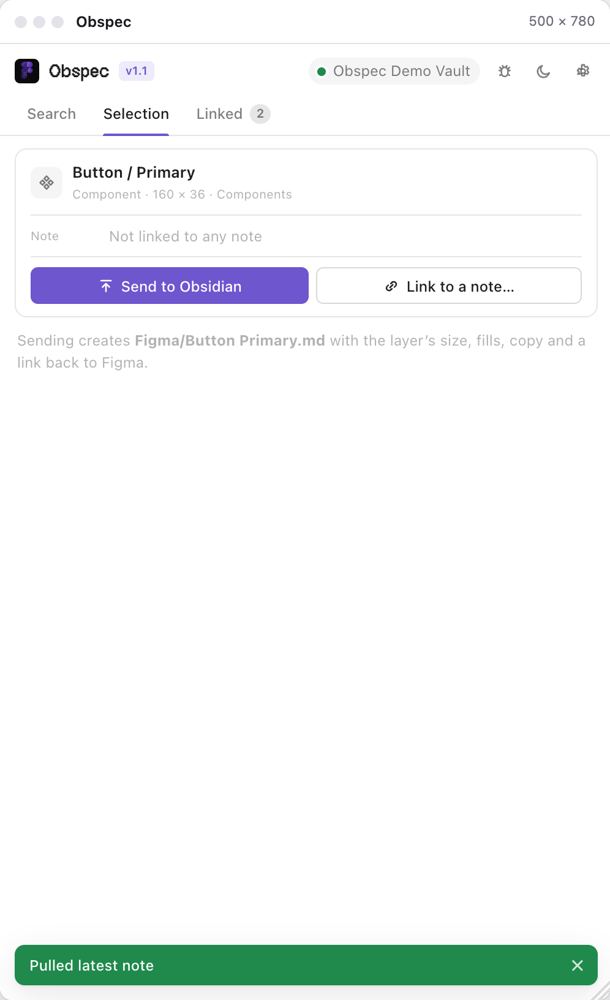
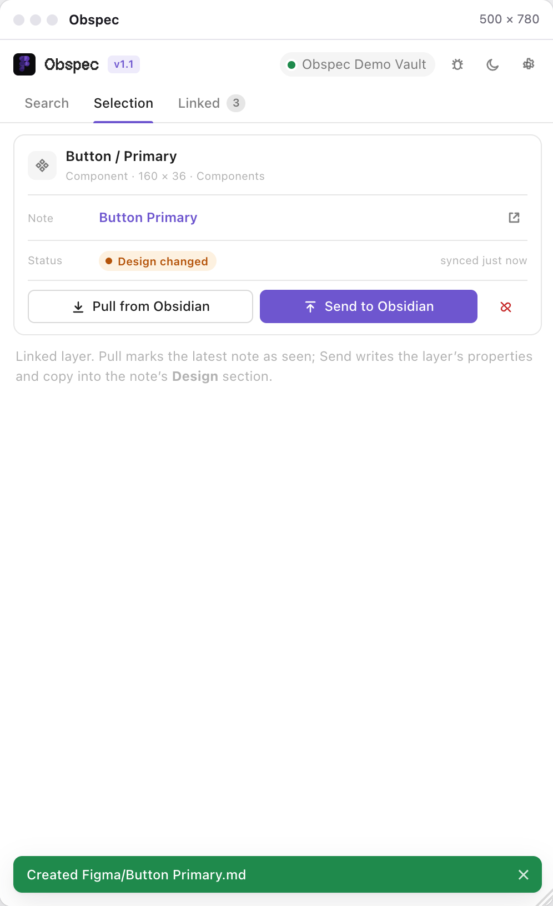
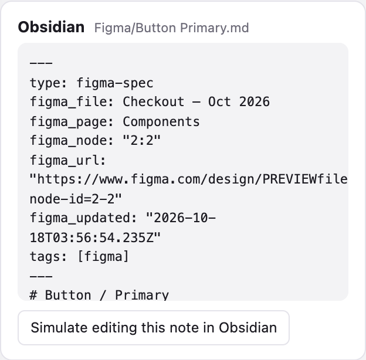
Make it a native Figma Spec
Figma Specs are markdown underneath, and Figma turns any .md file dropped on the canvas into a native Spec. There is no plugin API for that yet, so Obspec meets Specs halfway.
- Open a note and press the ↓ icon in the action bar. You get Title.md with the note's body, a source line (path, tags, an obsidian:// link) and no dangling wikilinks or embeds.
- Drop that file on the canvas. Figma builds the Spec.
Use a spec card when you want the note to live inside the design and stay linked. Use a native Spec when you want Figma's own Spec UI. Both read from the same plain .md file in your vault.
Settings and the theme
The ⚙ in the header opens Settings. The connection card tells you the vault, how many notes are indexed, the bridge version, and that it is running as the background service.
- Vault switch to another vault, browse, or paste a path.
- Bridge the address stays http://localhost:27123; that is the only one Figma lets the plugin talk to. An optional token adds auth on top.
- Theme the plugin follows Figma's light or dark theme. The ☾ button in the header overrides it.
- Support one button drafts a bug report with your plugin and bridge versions. Never your notes.
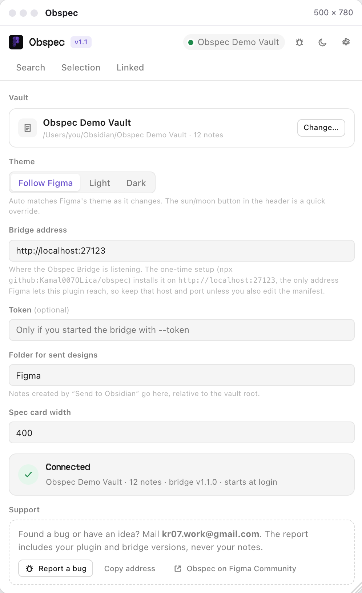
If something is off
- “Bridge offline” after a restart. Open Terminal and run npx github:Kamal007OLica/obspec status. It tells you whether the service is installed and answering. Run the setup command again to repair it.
- “Waiting for the bridge…” forever. The setup needs Node.js 18 or newer. Install it from nodejs.org and paste the command again.
- No vaults listed. Obsidian hasn't opened one on this computer yet. Browse for the folder or paste its path.
- Want to watch it run? npx github:Kamal007OLica/obspec run starts the bridge in a Terminal window instead; the background service steps aside while it runs.
- Privacy. The bridge binds to 127.0.0.1 only and talks to nothing but your vault folder. The plugin bundle loads no fonts, no scripts, no analytics.
Still stuck? Mail kr07.work@gmail.com with your Figma version, OS and the last lines of ~/.obspec/bridge.log, or open an issue on GitHub.